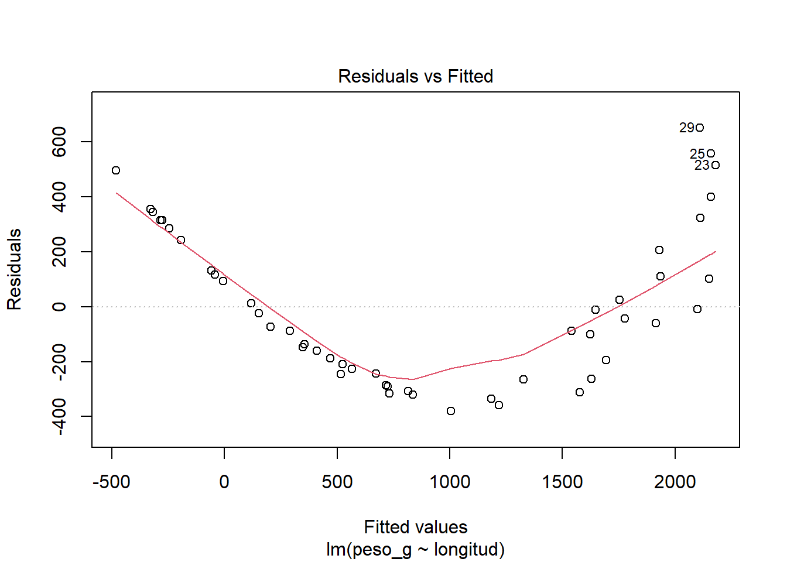
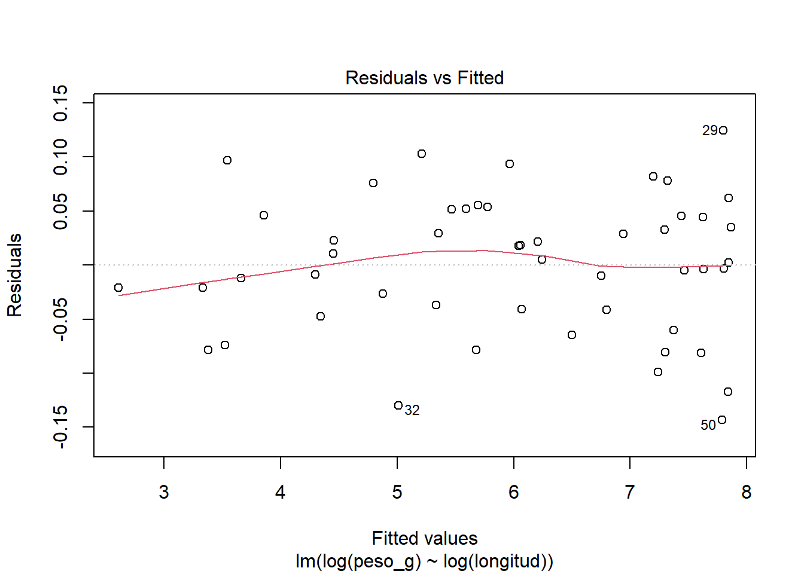

El Modelo Lineal General (MLG) describe la relación entre una variable de respuesta aleatoria, \(Y\), y una o más variables explicativas, que pueden ser numéricas, categóricas o ambas.
En este modelo se asume que:
La variable respuesta es cuantitativa y sigue una distribución Normal: \(Y∼N(μ_Y,σ^2_Y)\)
Su media, \(\mu_Y\), se expresa como una combinación lineal de las variables explicativas:
\[μ_Y=β_0+β_1X_1+β_2X_2+⋯+β_kX_K\]
La variabilidad alrededor de esa media se representa mediante un error aleatorio, \(\varepsilon\) que captura la parte de la variable respuesta que no queda explicada por las variables explicativas:
\[Y=β_0+β_1X_1+β_2X_2+⋯+β_kX_K+\varepsilon_i\]
Se asume que los errores son independientes e identicamente distribuidos (i.i.d) con distribución normal de media cero y varianza constante \(\sigma^2\): \(\varepsilon_i∼N(0,σ^2)\)
Esto significa dos cosas:
Idénticamente distribuidos: todos los errores provienen de la misma distribución Normal, con la misma varianza σ² para cualquier combinación de valores de las variables explicativas (es decir, la variabilidad no observada es igual de “grande” en toda la extensión de los datos).
Independientes: el error asociado a una observación no aporta información sobre el error de otra observación (el hecho de que el modelo “falle” al predecir un dato no influye sobre cuánto falla al predecir otro).
Los parámetros \(\beta_i\) y \(\sigma^2\) se estiman a partir de los datos.
Bajo este marco general, la prueba t de comparación de medias, los distintos ANOVA, la regresión lineal simple y la regresión lineal múltiple pueden entenderse como casos particulares del Modelo Lineal General, que se diferencian entre sí según el tipo de variables explicativas que incluyen (numéricas, categóricas o una combinación de ambas)
Las propiedades —independencia, homocedasticidad, normalidad y media cero— son los supuestos que sostienen la inferencia estadística en cualquier caso particular del Modelo Lineal General (regresión, ANOVA, prueba t). Los iremos revisando en detalle a medida que apliquemos el modelo a ejemplos concretos, comenzando por la regresión lineal simple en la sección 1.2.”
1.1 Protocolo para realizar un análisis estadístico completo
Antes de trabajar con cualquier programa estadístico, es importante reconocer que un análisis estadístico no consiste solamente en ajustar un modelo y observar un valor p. Es un proceso que parte de una pregunta de investigación y finaliza con la interpretación de los resultados en su contexto.
Para organizar ese proceso, seguiremos el siguiente protocolo:
Plantear la pregunta de investigación y las hipótesis
Se parte de una pregunta o hipótesis científica y se la traduce en hipótesis estadísticas sobre los parámetros del modelo.
Explicitar el modelo estadístico
Se define cuál es la variable respuesta, cuáles son las variables explicativas y qué supuestos se realizan sobre los datos.
Nota: algunos supuestos —como la independencia de las observaciones— no pueden verificarse a partir de los datos ya recolectados: dependen del diseño del estudio, es decir, de cómo se seleccionaron o asignaron las unidades experimentales. Por eso es importante considerarlos ya en este paso, y no recién al validar el modelo
Realizar un análisis exploratorio de los datos
Se estudia la distribución de las variables, se calculan estadísticas descriptivas y se elaboran gráficos para explorar la relación entre la respuesta y las variables explicativas.
Si bien el modelo se explicita antes de observar los datos en profundidad —para evitar el vicio de “explorar hasta encontrar algo”—, este paso puede llevar a reconsiderar aspectos del modelo planteado en el paso 2: por ejemplo, si se detecta una relación no lineal, valores atípicos u observaciones influyentes.
Estimar los parámetros del modelo
Se obtienen las estimaciones de los parámetros, sus intervalos de confianza del 95 %, medidas de calidad de ajuste y, cuando corresponda, medidas de magnitud del efecto.
Validar el modelo ajustado
Se evalúa si los supuestos del modelo son razonables. En regresión lineal, una herramienta fundamental es el análisis de los residuos.
Interpretar y comunicar los resultados
Los resultados se interpretan en relación con la pregunta inicial. La comunicación debe incluir tablas, gráficos y conclusiones expresadas en el contexto del problema, no solo resultados numéricos.
Un proceso iterativo, no lineal.
Este protocolo rara vez se recorre en una sola pasada. Si al validar el modelo (paso 5) se detectan incumplimientos importantes de los supuestos, es necesario volver a revisar el modelo estadístico (paso 2) —por ejemplo, transformando la variable respuesta o incorporando una variable explicativa que no se había considerado— y repetir el ciclo desde ahí. Un modelo que “falla” en la validación no es un fracaso del análisis: es una etapa normal del proceso.
Veamos cómo se desarrolla la regresión lineal simple como caso particular del Modelo Lineal General, y luego cómo se aplica el protocolo completo a un ejemplo concreto.
1.2 Regresión lineal simple
Para comprender cómo se estiman los parámetros del Modelo Lineal General, consideremos el caso más simple: la regresión lineal simple (RLS), en la que hay una sola variable explicativa numérica.
En este caso se estudia la relación entre una variable respuesta cuantitativa \(Y\) y una única variable explicativa numérica \(X\):
\[Y_i=\beta_0+\beta_1X_i+\varepsilon_i\qquad i = 1, \dots, n\]
donde:
\(\beta_0\) es el parámetro que caracteriza la ordenada al origen: el valor esperado de \(Y\) cuando \(X = 0\).
\(\beta_1\) es el parámetro que caracteriza a la pendiente: cuánto cambia, en promedio, \(Y\) por cada unidad de aumento en \(X\).
\(\varepsilon_i \qquad i = 1, \dots, n\) es el error aleatorio asociado a cada observación. Son independientes entre sí e identicamente distribuidos con \(\varepsilon_i∼N(0,σ^2)\), tal como se planteó en la sección 1.
1.2.1 Estimación de los parámetros
Los parámetros \(\beta_0\) y \(\beta_1\) son desconocidos y se estiman a partir de los datos. Sus estimaciones se denominan \(b_0\) y \(b_1\). Y dan lugar a la recta de regresión estimada:
\[\widehat{y}_i = b_0 + b_1 x_i\]
Para cada observación, diferencia entre el valor observado (\(y_i\))y el valor estimado por el modelo (\(\widehat{e}_i\)) se denomina residuo: \[e_i = y_i - \widehat{y}_i\]
El método de mínimos cuadrados busca los valores de \(b_0\) y \(b_1\) que minimizan la suma de los cuadrados de las diferencias entre los valores observados y los estimados:
\[\sum_{i=1}^{n}(y_i-\widehat{y}_i)^2\]
Estas diferencias se denominan residuos:
Figura: Representación gráfica de la recta de regresión estimada, valores observados, valor predicho y un residuo.
Si la recta estimada representa adecuadamente la relación entre las variables, esperamos que los residuos sean, en general, pequeños. El método de mínimos cuadrados busca, precisamente, los valores de \(b_0\) y \(b_1\) que minimizan la suma de cuadrados de los residuos:
El Método de Mínimos Cuadrados, consiste en encontrar \(b_0\) y \(b_1\) que minimicen la ecuación:
Los valores \(x_i\) e \(y_i\) son conocidos porque provienen de la muestra, mientras que \(b_0\) y \(b_1\) son los que se buscan.
Recordando lo estudiado en Análisis Matemático, esta expresión se deriva con respecto a \(b_0\) y \(b_1\). Luego, se igualan ambas derivadas a cero y se resuelve el sistema resultante. De este modo se obtienen las fórmulas que permiten encontrar las estimaciones \(b_0\) y \(b_1\) a partir de los datos. No desarrollaremos aquí el álgebra de esta derivación —el objetivo de este curso es interpretar y aplicar el modelo, no demostrarlo—, pero es importante comprender la lógica detrás: se elige la recta que, en conjunto, hace más pequeños los errores de predicción. En la práctica, R calcula automáticamente estas estimaciones mediante la función lm(), como veremos en la práctica guiada.
1.2.2 Modelo probabilístico de la regresión lineal simple
Para un mismo valor de la variable explicativa \(x_i\), es posible observar distintos valores de la variable respuesta. Por ello, para cada valor de \(x_i\), la variable respuesta \(Y_i\) se considera una variable aleatoria, caracterizada por una media \(\mu_i\) y una varianza \(\sigma^2\).
La recta de regresión teórica pasa por los valores medios de la variable respuesta para cada valor de la variable explicativa. En regresión lineal simple, esta media se expresa mediante una función lineal:
La diferencia entre el valor de la variable respuesta y su media esperada se denomina error aleatorio:
\[\varepsilon_i = Y_i - E(Y_i \mid X_i = x_i)\]
Por lo tanto, el modelo de regresión lineal simple puede escribirse como:
\[Y_i = \beta_0 + \beta_1x_i + \varepsilon_i\]
Figura: Representación del modelo de regresión lineal simple. Los puntos azules representan valores observados de la variable respuesta para cada valor de \(x_i\) ; los puntos rojos representan las medias esperadas \(E(Y_i∣X_i=x_i)\) .
En la sección 1 presentamos los supuestos que se asumen sobre los errores aleatorios del Modelo Lineal General. En el caso de la regresión lineal simple, estos supuestos son los siguientes, y su cumplimiento es lo que permite realizar inferencias válidas sobre los parámetros del modelo (pruebas de hipótesis e intervalos de confianza)
Linealidad: la media de la variable respuesta se relaciona linealmente con la variable explicativa.
Normalidad: para cada valor de \(x_i\), la variable respuesta se distribuye normalmente alrededor de su media.
Varianza constante u homocedasticidad: la variabilidad de los rendimientos es aproximadamente la misma para todos los valores de densidad de siembra.
Independencia: los valores observados se obtienen de manera independiente; el rendimiento de una parcela no debe influir sobre el de otra.
Estos supuestos pueden resumirse expresando que los errores son independientes, tienen media cero, varianza constante y distribución Normal:
\[\varepsilon_i \sim N(0, \sigma^2)\]
Bajo estos supuestos, las estimaciones de la ordenada al origen y de la pendiente permiten realizar inferencias sobre los parámetros poblacionales.
1.2.3 Inferencia sobre los parámetros
Las estimaciones \(b_0\) y \(b_1\) se calcularon a partir de una muestra particular de datos. Si hubiéramos tomado otra muestra —otras unidades experimentales, otras observaciones—, los valores de \(b_0\) y \(b_1\) habrían sido distintos. Esto significa que \(b_0\) y \(b_1\) son, en sí mismas, variables aleatorias: cada uno tiene una distribución de probabilidad, una media y una varianza, que describen cómo varían de muestra a muestra.
Bajo los supuestos presentados en la sección de modelo probabilístico, puede demostrarse que esta variabilidad se puede cuantificar mediante el error estándar de cada estimación, que notaremos \(EE(b_0)\) y \(EE(b_1)\) . El error estándar mide, en promedio, cuánto se espera que la estimación se aleje del verdadero valor del parámetro poblacional si repitiéramos el muestreo muchas veces. Un error estándar pequeño indica una estimación más precisa.
Con la estimación y su error estándar podemos responder dos preguntas distintas:
1.2.3.1 Prueba de hipótesis para la pendiente
La pendiente \(\beta_1\) es, generalmente, el parámetro de mayor interés en una regresión lineal simple: indica si existe una relación lineal entre X e Y. Para evaluarlo, se plantea la siguiente prueba de hipótesis:
\(H_0: \beta_1 = 0\) vs \(H_1: \beta_1 \neq0\)
Si \(\beta_1=0\), la recta de regresión teórica es horizontal: esto significa que, en promedio, la variable respuesta no cambia con la variable explicativa.
Para poner a prueba esta hipótesis se calcula un estadístico t, que compara la estimación con su error estándar:
\[t=\frac{b_1}{EE(b_1)}\]
Cuanto más grande (en valor absoluto) sea este estadístico, menos compatible es la estimación observada con la hipótesis nula de que \(\beta_1=0\). A partir de t se obtiene un valor p, que indica la probabilidad de observar una estimación como \(\beta_1\) (o más extrema), si en realidad \(\beta_1\) fuera igual a cero. Un valor p pequeño (habitualmente, menor a 0.05) lleva a rechazar H₀ y concluir que existe evidencia de una relación lineal entre las variables.
Este mismo procedimiento puede aplicarse a \(\beta_0\), aunque en la práctica su interpretación suele tener menos interés (como veremos en la práctica guiada).
1.2.3.2 Intervalo de confianza para la pendiente
El valor \(p\) indica si se rechaza o no la hipótesis de que \(\beta_1=0\), pero no informa cuál podría ser el verdadero valor de \(\beta_1\). Para eso se construye un intervalo de confianza (IC), que ofrece un rango de valores plausibles para el parámetro poblacional, con un nivel de confianza dado (habitualmente, 95 %):
donde \(t\) es un valor crítico de la distribución t que depende del nivel de confianza elegido y de los grados de libertad del modelo.
Si este intervalo no contiene al cero, se llega a la misma conclusión que con la prueba de hipótesis: existe evidencia de una relación lineal entre las variables. El intervalo de confianza tiene la ventaja de aportar información adicional sobre la magnitud plausible del efecto, no solo sobre su significancia estadística.
En la sección Práctica Guiada aplicaremos estos conceptos —estimación, error estándar, prueba de hipótesis e intervalo de confianza— a un ejemplo concreto: la relación entre el rendimiento de trigo y la densidad de siembra.
1.2.4 Verificación de los supuestos
Los supuestos se verifican sobre los residuos, porque los errores \(\varepsilon_i\) no son observables.
Linealidad, homocedasticidad e independencia se evalúan con el gráfico de residuos contra valores ajustados (la nube debe estar centrada en cero y sin patrón ni abanico) y con el diseño del estudio (la independencia no se verifica con datos, se justifica con el diseño).
Normalidad se evalúa con dos herramientas complementarias:
Gráfico Q-Q: compara los cuantiles de los residuos con los de una normal teórica. Si los residuos son normales, los puntos caen sobre la recta de referencia. Colas que se separan indican colas más pesadas o livianas; una forma de S indica asimetría. Para ver cómo construirlo e interpretarlo, consultar la página Cómo hacer e interpretar un gráfico Q-Q.
Prueba de Shapiro-Wilk:\(H_0\): los residuos provienen de una distribución normal; \(H_1\): no provienen de una distribución normal. Si \(p > 0.05\), no hay evidencia para rechazar la normalidad.
Tener en cuenta que con muestras chicas la prueba tiene poca potencia, y con muestras grandes cualquier desvío leve resulta significativo. Por eso conviene mirar el gráfico Q-Q junto con el valor \(p\).
1.2.5 Residuos altos, puntos de palanca y observaciones influyentes
Al validar el modelo conviene distinguir tres situaciones, que no siempre coinciden:
Residuo alto (atípico en Y): la observación se aleja mucho de la recta en la dirección vertical. Se mide con el residuo estandarizado\(r_i = \dfrac{e_i}{s\sqrt{1-h_{ii}}}\). Como regla orientativa, \(|r_i| > 2\) merece revisión.
Punto de palanca (leverage): la observación tiene un valor de \(x\) lejos del centro de los datos. Se mide con \(h_{ii}\). En regresión simple, el promedio de \(h_{ii}\) es \(2/n\); como criterio práctico se revisan los puntos con \(h_{ii} > 4/n\).
Observación influyente: al quitarla, los coeficientes cambian de forma apreciable. La medida más usada es la distancia de Cook:
Como criterio orientativo, \(D_i > 4/n\) indica una observación a revisar.
Un punto puede ser atípico sin ser influyente (si está cerca del centro de \(x\)), o puede tener mucha palanca sin ser atípico (si sigue la tendencia del resto). La influencia depende de ambas cosas.
Qué hacer con un punto sospechoso:
Verificar si es un error de carga o de medición.
Ajustar el modelo sin ese punto y comparar los coeficientes.
No eliminarlo sin una justificación. Si se elimina, informarlo en el reporte.
1.3 Cuando la relación no es lineal: linealización
No toda relación curva requiere un modelo no lineal. Muchas veces se puede transformar una de las variables (o las dos) para que la relación sea lineal y luego aplicar el modelo lineal habitual.
Un caso frecuente en biología es la relación alométrica entre peso y longitud:
\[W = a \cdot L^{b} \quad\Rightarrow\quad \log(W) = \log(a) + b \cdot \log(L)\]
En la escala logarítmica es una recta: la ordenada es \(\log(a)\) y la pendiente es \(b\).
Code
set.seed(7)longitud <-runif(50, min =10, max =60) # cmpeso_g <-0.012* longitud^3*exp(rnorm(50, sd =0.08)) # relación potencia con error multiplicativopeces <-data.frame(longitud, peso_g)# 1. Modelo lineal sobre los datos originales: la linealidad no se cumplemodelo_lineal <-lm(peso_g ~ longitud, data = peces)plot(modelo_lineal, which =1) # residuos con patrón curvo

Code
# 2. Transformación logarítmica de ambas variablesmodelo_log <-lm(log(peso_g) ~log(longitud), data = peces)plot(modelo_log, which =1) # residuos sin patrón

Code
summary(modelo_log)
Call:
lm(formula = log(peso_g) ~ log(longitud), data = peces)
Residuals:
Min 1Q Median 3Q Max
-0.143366 -0.041467 0.003585 0.045790 0.124336
Coefficients:
Estimate Std. Error t value Pr(>|t|)
(Intercept) -4.44446 0.06418 -69.25 <2e-16 ***
log(longitud) 3.00832 0.01830 164.43 <2e-16 ***
---
Signif. codes: 0 '***' 0.001 '**' 0.01 '*' 0.05 '.' 0.1 ' ' 1
Residual standard error: 0.06428 on 48 degrees of freedom
Multiple R-squared: 0.9982, Adjusted R-squared: 0.9982
F-statistic: 2.704e+04 on 1 and 48 DF, p-value: < 2.2e-16
Code
exp(coef(modelo_log)[1]) # estimación de a
(Intercept)
0.01174344
Code
coef(modelo_log)[2] # estimación de b
log(longitud)
3.008317
En el modelo lineal sobre los datos originales, los residuos forman una curva: falla la linealidad.
Después de la transformación, los residuos no muestran patrón.
El exponente \(b\) se interpreta directamente: si \(b \approx 3\), el peso crece con el cubo de la longitud.
Advertencia: al transformar la respuesta, la interpretación cambia (los coeficientes están en escala logarítmica y, para volver a la escala original, hay que aplicar la exponencial), y hay que validar de nuevo los supuestos sobre el modelo transformado.
1.4 Correlación
El coeficiente de correlación de Pearson mide la fuerza y la dirección de la relación lineal entre dos variables:
El valor absoluto indica la fuerza: cerca de 0 la relación lineal es débil; cerca de 1 o −1, fuerte.
En regresión lineal simple, \(r^2\) coincide con el \(R^2\) del modelo.
Supuestos. A diferencia de la regresión, en la correlación las dos variables deben ser aleatorias: ambas se miden sobre unidades seleccionadas al azar. Para la prueba de hipótesis conviene que la relación sea lineal y que las dos variables sigan aproximadamente una distribución normal conjunta.
Prueba de hipótesis:\(H_0: \rho = 0\) vs \(H_1: \rho \neq 0\), con \[t = \frac{r\sqrt{n-2}}{\sqrt{1-r^2}} \qquad \text{con } n-2 \text{ grados de libertad}\]
Ejemplo: peso vivo y perímetro torácico de animales. Se midieron 18 animales, elegidos dentro de una muestra de la EAC “Observaciones del Animal en Exterior para Estimar Edad, Peso Vivo y Condición Corporal” (carrera de Ing. Agronómica). En cada animal se midieron el perímetro torácico (cm) y el peso vivo (kg). Ambas variables son aleatorias, porque los animales no fueron fijados por el investigador. (Se desarrollará en R en la práctica guiada)
Con \(r \approx 0.93\) y \(p < 0.001\) se rechaza \(H_0: \rho = 0\): existe una asociación lineal positiva fuerte entre el perímetro torácico y el peso vivo.
Pregunta: ¿qué pasa con la correlación si cambiamos el orden de las variables? ¿Y con las pendientes?
ffo #| label: simetria coef(lm(peso_vivo ~ perimetro_toracico, data = animales))["perimetro_toracico"] # pendiente de peso sobre perímetro coef(lm(perimetro_toracico ~ peso_vivo, data = animales))["peso_vivo"] # pendiente de perímetro sobre peso cor(animales$perimetro_toracico, animales$peso_vivo) # igual en ambos sentidos}
La correlación es simétrica, pero las pendientes no. Por eso la regresión tiene una variable respuesta y una explicativa, y la correlación no.
Source Code
---title: "Teoría 4"---# Modelo lineal general¿Qué es el Modelo Lineal General?El Modelo Lineal General (MLG) describe la relación entre una variable de respuesta aleatoria, $Y$, y una o más variables explicativas, que pueden ser numéricas, categóricas o ambas.En este modelo se asume que:- La variable respuesta es cuantitativa y sigue una distribución Normal: $Y∼N(μ_Y,σ^2_Y)$- Su media, $\mu_Y$, se expresa como una combinación lineal de las variables explicativas:$$μ_Y=β_0+β_1X_1+β_2X_2+⋯+β_kX_K$$- La variabilidad alrededor de esa media se representa mediante un error aleatorio, $\varepsilon$ que captura la parte de la variable respuesta que no queda explicada por las variables explicativas:$$Y=β_0+β_1X_1+β_2X_2+⋯+β_kX_K+\varepsilon_i$$Se asume que los errores son **independientes e identicamente distribuidos (i.i.d)** con distribución normal de media cero y varianza constante $\sigma^2$: $\varepsilon_i∼N(0,σ^2)$Esto significa dos cosas:- Idénticamente distribuidos: todos los errores provienen de la misma distribución Normal, con la misma varianza σ² para cualquier combinación de valores de las variables explicativas (es decir, la variabilidad no observada es igual de "grande" en toda la extensión de los datos).\- Independientes: el error asociado a una observación no aporta información sobre el error de otra observación (el hecho de que el modelo "falle" al predecir un dato no influye sobre cuánto falla al predecir otro).Los parámetros $\beta_i$ y $\sigma^2$ se estiman a partir de los datos.Bajo este marco general, la prueba t de comparación de medias, los distintos ANOVA, la regresión lineal simple y la regresión lineal múltiple pueden entenderse como **casos particulares del Modelo Lineal General**, que se diferencian entre sí según el tipo de variables explicativas que incluyen (numéricas, categóricas o una combinación de ambas)Las propiedades —independencia, homocedasticidad, normalidad y media cero— son los supuestos que sostienen la inferencia estadística en **cualquier caso particular del Modelo Lineal General** (regresión, ANOVA, prueba t). Los iremos revisando en detalle a medida que apliquemos el modelo a ejemplos concretos, comenzando por la regresión lineal simple en la sección 1.2."## Protocolo para realizar un análisis estadístico completoAntes de trabajar con cualquier programa estadístico, es importante reconocer que un análisis estadístico no consiste solamente en ajustar un modelo y observar un valor *p*. Es un proceso que parte de una pregunta de investigación y finaliza con la interpretación de los resultados en su contexto.Para organizar ese proceso, seguiremos el siguiente protocolo:1. **Plantear la pregunta de investigación y las hipótesis**Se parte de una pregunta o hipótesis científica y se la traduce en hipótesis estadísticas sobre los parámetros del modelo.2. **Explicitar el modelo estadístico**Se define cuál es la variable respuesta, cuáles son las variables explicativas y qué supuestos se realizan sobre los datos.**Nota:** algunos supuestos —como la independencia de las observaciones— no pueden verificarse a partir de los datos ya recolectados: dependen del **diseño del estudio**, es decir, de cómo se seleccionaron o asignaron las unidades experimentales. Por eso es importante considerarlos ya en este paso, y no recién al validar el modelo3. **Realizar un análisis exploratorio de los datos**Se estudia la distribución de las variables, se calculan estadísticas descriptivas y se elaboran gráficos para explorar la relación entre la respuesta y las variables explicativas.Si bien el modelo se explicita antes de observar los datos en profundidad —para evitar el vicio de "explorar hasta encontrar algo"—, este paso puede llevar a **reconsiderar aspectos del modelo planteado** en el paso 2: por ejemplo, si se detecta una relación no lineal, valores atípicos u observaciones influyentes.4. **Estimar los parámetros del modelo**Se obtienen las estimaciones de los parámetros, sus intervalos de confianza del 95 %, medidas de calidad de ajuste y, cuando corresponda, medidas de magnitud del efecto.5. **Validar el modelo ajustado**Se evalúa si los supuestos del modelo son razonables. En regresión lineal, una herramienta fundamental es el análisis de los residuos.6. **Interpretar y comunicar los resultados**Los resultados se interpretan en relación con la pregunta inicial. La comunicación debe incluir tablas, gráficos y conclusiones expresadas en el contexto del problema, no solo resultados numéricos.**Un proceso iterativo, no lineal.**Este protocolo rara vez se recorre en una sola pasada. Si al validar el modelo (paso 5) se detectan incumplimientos importantes de los supuestos, es necesario **volver a revisar el modelo estadístico** (paso 2) —por ejemplo, transformando la variable respuesta o incorporando una variable explicativa que no se había considerado— y repetir el ciclo desde ahí. Un modelo que "falla" en la validación no es un fracaso del análisis: es una etapa normal del proceso.Veamos cómo se desarrolla la regresión lineal simple como caso particular del Modelo Lineal General, y luego cómo se aplica el protocolo completo a un ejemplo concreto.## Regresión lineal simplePara comprender cómo se estiman los parámetros del Modelo Lineal General, consideremos el caso más simple: la **regresión lineal simple** (RLS), en la que hay una sola variable explicativa numérica.En este caso se estudia la relación entre una variable respuesta cuantitativa $Y$ y una única variable explicativa numérica $X$:$$Y_i=\beta_0+\beta_1X_i+\varepsilon_i\qquad i = 1, \dots, n$$donde:- $\beta_0$ es el parámetro que caracteriza la ordenada al origen: el valor esperado de $Y$ cuando $X = 0$.- $\beta_1$ es el parámetro que caracteriza a la pendiente: cuánto cambia, en promedio, $Y$ por cada unidad de aumento en $X$.- $\varepsilon_i \qquad i = 1, \dots, n$ es el error aleatorio asociado a cada observación. Son independientes entre sí e identicamente distribuidos con $\varepsilon_i∼N(0,σ^2)$, tal como se planteó en la sección 1.### Estimación de los parámetrosLos parámetros $\beta_0$ y $\beta_1$ son desconocidos y se estiman a partir de los datos. Sus estimaciones se denominan $b_0$ y $b_1$. Y dan lugar a la recta de regresión estimada:$$\widehat{y}_i = b_0 + b_1 x_i$$Para cada observación, diferencia entre el valor observado ($y_i$)y el valor estimado por el modelo ($\widehat{e}_i$) se denomina residuo: $$e_i = y_i - \widehat{y}_i$$El método de **mínimos cuadrados** busca los valores de $b_0$ y $b_1$ que minimizan la suma de los cuadrados de las diferencias entre los valores observados y los estimados:$$\sum_{i=1}^{n}(y_i-\widehat{y}_i)^2$$Estas diferencias se denominan **residuos**:Si la recta estimada representa adecuadamente la relación entre las variables, esperamos que los residuos sean, en general, pequeños. El método de mínimos cuadrados busca, precisamente, los valores de $b_0$ y $b_1$ que minimizan la suma de cuadrados de los residuos:El **Método de Mínimos Cuadrados**, consiste en encontrar $b_0$ y $b_1$ que minimicen la ecuación:$$\sum_{i=1}^{n} \left[y_i - (b_0+ b_1x_i)\right]^2$$Los valores $x_i$ e $y_i$ son conocidos porque provienen de la muestra, mientras que $b_0$ y $b_1$ son los que se buscan.Recordando lo estudiado en Análisis Matemático, esta expresión se deriva con respecto a $b_0$ y $b_1$. Luego, se igualan ambas derivadas a cero y se resuelve el sistema resultante. De este modo se obtienen las fórmulas que permiten encontrar las estimaciones $b_0$ y $b_1$ a partir de los datos. No desarrollaremos aquí el álgebra de esta derivación —el objetivo de este curso es interpretar y aplicar el modelo, no demostrarlo—, pero es importante comprender la lógica detrás: se elige la recta que, en conjunto, hace más pequeños los errores de predicción. En la práctica, R calcula automáticamente estas estimaciones mediante la función `lm()`, como veremos en la práctica guiada.### Modelo probabilístico de la regresión lineal simplePara un mismo valor de la variable explicativa $x_i$, es posible observar distintos valores de la variable respuesta. Por ello, para cada valor de $x_i$, la variable respuesta $Y_i$ se considera una variable aleatoria, caracterizada por una media $\mu_i$ y una varianza $\sigma^2$.La recta de regresión teórica pasa por los valores medios de la variable respuesta para cada valor de la variable explicativa. En regresión lineal simple, esta media se expresa mediante una función lineal:$$E(Y_i \mid X_i = x_i) = \mu_i = \beta_0 + \beta_1x_i$$La diferencia entre el valor de la variable respuesta y su media esperada se denomina error aleatorio:$$\varepsilon_i = Y_i - E(Y_i \mid X_i = x_i)$$Por lo tanto, el modelo de regresión lineal simple puede escribirse como:$$Y_i = \beta_0 + \beta_1x_i + \varepsilon_i$${width="555" height="310"}En la sección 1 presentamos los supuestos que se asumen sobre los errores aleatorios del Modelo Lineal General. En el caso de la regresión lineal simple, estos supuestos son los siguientes, y su cumplimiento es lo que permite realizar inferencias válidas sobre los parámetros del modelo (pruebas de hipótesis e intervalos de confianza)1. **Linealidad:** la media de la variable respuesta se relaciona linealmente con la variable explicativa.2. **Normalidad:** para cada valor de $x_i$, la variable respuesta se distribuye normalmente alrededor de su media.3. **Varianza constante u homocedasticidad:** la variabilidad de los rendimientos es aproximadamente la misma para todos los valores de densidad de siembra.4. **Independencia:** los valores observados se obtienen de manera independiente; el rendimiento de una parcela no debe influir sobre el de otra.Estos supuestos pueden resumirse expresando que los errores son independientes, tienen media cero, varianza constante y distribución Normal:$$\varepsilon_i \sim N(0, \sigma^2)$$Bajo estos supuestos, las estimaciones de la ordenada al origen y de la pendiente permiten realizar inferencias sobre los parámetros poblacionales.### Inferencia sobre los parámetrosLas estimaciones $b_0$ y $b_1$ se calcularon a partir de una muestra particular de datos. Si hubiéramos tomado otra muestra —otras unidades experimentales, otras observaciones—, los valores de $b_0$ y $b_1$ habrían sido distintos. Esto significa que $b_0$ y $b_1$ son, en sí mismas, variables aleatorias: cada uno tiene una distribución de probabilidad, una media y una varianza, que describen cómo varían de muestra a muestra.Bajo los supuestos presentados en la sección de modelo probabilístico, puede demostrarse que esta variabilidad se puede cuantificar mediante el error estándar de cada estimación, que notaremos $EE(b_0)$ y $EE(b_1)$ . El error estándar mide, en promedio, cuánto se espera que la estimación se aleje del verdadero valor del parámetro poblacional si repitiéramos el muestreo muchas veces. Un error estándar pequeño indica una estimación más precisa.Con la estimación y su error estándar podemos responder dos preguntas distintas:#### Prueba de hipótesis para la pendienteLa pendiente $\beta_1$ es, generalmente, el parámetro de mayor interés en una regresión lineal simple: indica si existe una relación lineal entre X e Y. Para evaluarlo, se plantea la siguiente prueba de hipótesis:$H_0: \beta_1 = 0$ vs $H_1: \beta_1 \neq0$Si $\beta_1=0$, la recta de regresión teórica es horizontal: esto significa que, en promedio, la variable respuesta no cambia con la variable explicativa.Para poner a prueba esta hipótesis se calcula un estadístico t, que compara la estimación con su error estándar:$$t=\frac{b_1}{EE(b_1)}$$Cuanto más grande (en valor absoluto) sea este estadístico, menos compatible es la estimación observada con la hipótesis nula de que $\beta_1=0$. A partir de t se obtiene un valor p, que indica la probabilidad de observar una estimación como $\beta_1$ (o más extrema), si en realidad $\beta_1$ fuera igual a cero. Un valor p pequeño (habitualmente, menor a 0.05) lleva a rechazar H₀ y concluir que existe evidencia de una relación lineal entre las variables.Este mismo procedimiento puede aplicarse a $\beta_0$, aunque en la práctica su interpretación suele tener menos interés (como veremos en la práctica guiada).#### Intervalo de confianza para la pendienteEl valor $p$ indica si se rechaza o no la hipótesis de que $\beta_1=0$, pero no informa cuál podría ser el verdadero valor de $\beta_1$. Para eso se construye un intervalo de confianza (IC), que ofrece un rango de valores plausibles para el parámetro poblacional, con un nivel de confianza dado (habitualmente, 95 %):$$IC(\beta_1,(1-\alpha)\%)=b_1\pm t_{\frac{\alpha}{2}} \times EE(b_1)$$donde $t$ es un valor crítico de la distribución t que depende del nivel de confianza elegido y de los grados de libertad del modelo.Si este intervalo no contiene al cero, se llega a la misma conclusión que con la prueba de hipótesis: existe evidencia de una relación lineal entre las variables. El intervalo de confianza tiene la ventaja de aportar información adicional sobre la magnitud plausible del efecto, no solo sobre su significancia estadística.En la sección Práctica Guiada aplicaremos estos conceptos —estimación, error estándar, prueba de hipótesis e intervalo de confianza— a un ejemplo concreto: la relación entre el rendimiento de trigo y la densidad de siembra.### Verificación de los supuestosLos supuestos se verifican sobre los **residuos**, porque los errores $\varepsilon_i$ no son observables.**Linealidad, homocedasticidad e independencia** se evalúan con el gráfico de residuos contra valores ajustados (la nube debe estar centrada en cero y sin patrón ni abanico) y con el diseño del estudio (la independencia no se verifica con datos, se justifica con el diseño).**Normalidad** se evalúa con dos herramientas complementarias:- **Gráfico Q-Q:** compara los cuantiles de los residuos con los de una normal teórica. Si los residuos son normales, los puntos caen sobre la recta de referencia. Colas que se separan indican colas más pesadas o livianas; una forma de S indica asimetría. Para ver cómo construirlo e interpretarlo, consultar la página [Cómo hacer e interpretar un gráfico Q-Q](../explicaciones extras/qqplot.qmd).- **Prueba de Shapiro-Wilk:** $H_0$: los residuos provienen de una distribución normal; $H_1$: no provienen de una distribución normal. Si $p > 0.05$, no hay evidencia para rechazar la normalidad.Tener en cuenta que con muestras chicas la prueba tiene poca potencia, y con muestras grandes cualquier desvío leve resulta significativo. Por eso conviene mirar el gráfico Q-Q junto con el valor $p$.### Residuos altos, puntos de palanca y observaciones influyentesAl validar el modelo conviene distinguir tres situaciones, que no siempre coinciden:- **Residuo alto (atípico en Y):** la observación se aleja mucho de la recta en la dirección vertical. Se mide con el **residuo estandarizado** $r_i = \dfrac{e_i}{s\sqrt{1-h_{ii}}}$. Como regla orientativa, $|r_i| > 2$ merece revisión.- **Punto de palanca (leverage):** la observación tiene un valor de $x$ lejos del centro de los datos. Se mide con $h_{ii}$. En regresión simple, el promedio de $h_{ii}$ es $2/n$; como criterio práctico se revisan los puntos con $h_{ii} > 4/n$.- **Observación influyente:** al quitarla, los coeficientes cambian de forma apreciable. La medida más usada es la **distancia de Cook**:$$D_i = \frac{e_i^2}{2\,s^2}\cdot\frac{h_{ii}}{(1-h_{ii})^2}$$Como criterio orientativo, $D_i > 4/n$ indica una observación a revisar.Un punto puede ser atípico sin ser influyente (si está cerca del centro de $x$), o puede tener mucha palanca sin ser atípico (si sigue la tendencia del resto). La influencia depende de ambas cosas.**Qué hacer con un punto sospechoso:**1. Verificar si es un error de carga o de medición.2. Ajustar el modelo sin ese punto y comparar los coeficientes.3. No eliminarlo sin una justificación. Si se elimina, informarlo en el reporte.## Cuando la relación no es lineal: linealizaciónNo toda relación curva requiere un modelo no lineal. Muchas veces se puede **transformar** una de las variables (o las dos) para que la relación sea lineal y luego aplicar el modelo lineal habitual.Un caso frecuente en biología es la relación **alométrica** entre peso y longitud:$$W = a \cdot L^{b} \quad\Rightarrow\quad \log(W) = \log(a) + b \cdot \log(L)$$En la escala logarítmica es una recta: la ordenada es $\log(a)$ y la pendiente es $b$.```{r}#| label: ejemplo-linealizableset.seed(7)longitud <-runif(50, min =10, max =60) # cmpeso_g <-0.012* longitud^3*exp(rnorm(50, sd =0.08)) # relación potencia con error multiplicativopeces <-data.frame(longitud, peso_g)# 1. Modelo lineal sobre los datos originales: la linealidad no se cumplemodelo_lineal <-lm(peso_g ~ longitud, data = peces)plot(modelo_lineal, which =1) # residuos con patrón curvo# 2. Transformación logarítmica de ambas variablesmodelo_log <-lm(log(peso_g) ~log(longitud), data = peces)plot(modelo_log, which =1) # residuos sin patrónsummary(modelo_log)exp(coef(modelo_log)[1]) # estimación de acoef(modelo_log)[2] # estimación de b```- En el modelo lineal sobre los datos originales, los residuos forman una curva: falla la linealidad.- Después de la transformación, los residuos no muestran patrón.- El exponente $b$ se interpreta directamente: si $b \approx 3$, el peso crece con el cubo de la longitud.**Advertencia:** al transformar la respuesta, la interpretación cambia (los coeficientes están en escala logarítmica y, para volver a la escala original, hay que aplicar la exponencial), y hay que validar de nuevo los supuestos sobre el modelo transformado.## CorrelaciónEl **coeficiente de correlación de Pearson** mide la fuerza y la dirección de la relación **lineal** entre dos variables:$$r = \frac{\sum_{i=1}^{n}(x_i - \bar{x})(y_i - \bar{y})}{\sqrt{\sum_{i=1}^{n}(x_i - \bar{x})^2 \sum_{i=1}^{n}(y_i - \bar{y})^2}}, \qquad -1 \le r \le 1$$- El signo indica la dirección de la relación.- El valor absoluto indica la fuerza: cerca de 0 la relación lineal es débil; cerca de 1 o −1, fuerte.- En regresión lineal simple, $r^2$ coincide con el $R^2$ del modelo.**Supuestos.** A diferencia de la regresión, en la correlación **las dos variables deben ser aleatorias**: ambas se miden sobre unidades seleccionadas al azar. Para la prueba de hipótesis conviene que la relación sea lineal y que las dos variables sigan aproximadamente una distribución normal conjunta.**Prueba de hipótesis:** $H_0: \rho = 0$ vs $H_1: \rho \neq 0$, con $$t = \frac{r\sqrt{n-2}}{\sqrt{1-r^2}} \qquad \text{con } n-2 \text{ grados de libertad}$$**Ejemplo: peso vivo y perímetro torácico de animales.** Se midieron 18 animales, elegidos dentro de una muestra de la EAC "Observaciones del Animal en Exterior para Estimar Edad, Peso Vivo y Condición Corporal" (carrera de Ing. Agronómica). En cada animal se midieron el perímetro torácico (cm) y el peso vivo (kg). Ambas variables son aleatorias, porque los animales no fueron fijados por el investigador. (Se desarrollará en R en la práctica guiada)Con $r \approx 0.93$ y $p < 0.001$ se rechaza $H_0: \rho = 0$: existe una asociación lineal positiva fuerte entre el perímetro torácico y el peso vivo.**Pregunta:** ¿qué pasa con la correlación si cambiamos el orden de las variables? ¿Y con las pendientes?```{r} #| label: simetria coef(lm(peso_vivo ~ perimetro_toracico, data = animales))["perimetro_toracico"] # pendiente de peso sobre perímetro coef(lm(perimetro_toracico ~ peso_vivo, data = animales))["peso_vivo"] # pendiente de perímetro sobre peso cor(animales$perimetro_toracico, animales$peso_vivo) # igual en ambos sentidos}```La correlación es simétrica, pero las pendientes no. Por eso la regresión tiene una variable respuesta y una explicativa, y la correlación no.